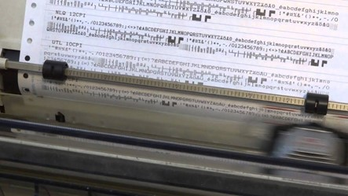
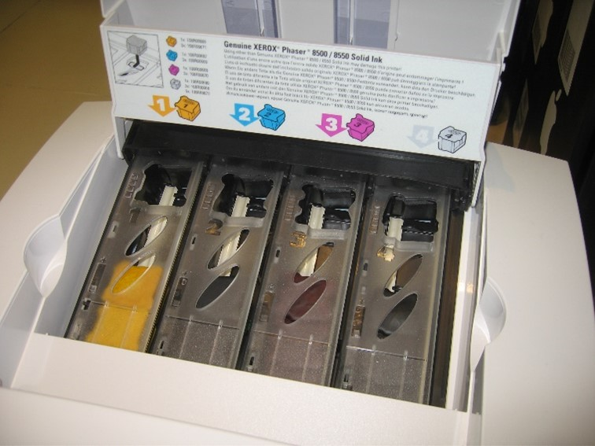
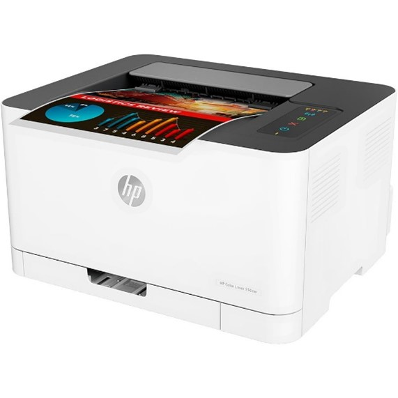
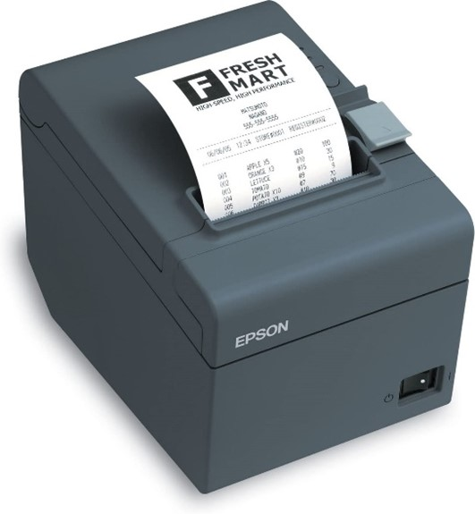

Nyomtatók
A nyomtató egy kimeneti periféria, amely a digitálisan tárolt adatokat képes megjeleníteni nem elektronikus formában, általában papíron vagy fólián.
Nyomtató felbontása
A nyomtató felbontását DPI-ben (dot per inch) mérik, azt mutatja meg, hogy a nyomtató egy inch (2,54 cm) hosszúságú szakaszon hány darab apró képpontot tud nyomtatni. Minél nagyobb a felbontás, annál szebb minőségű és részletesebb lesz a nyomtatás eredménye.
Jellemző felbontások például: 300 DPI, 600 DPI, 1200 DPI
Pontmátrix nyomtató
A nyomtatófejben apró tűk vannak (általában 9 vagy 24 db). A papír előtt egy kifeszített festékszalag helyezkedik el, amelyre a tűk ráütnek, és létrehoznak a papíron egy pontot. A kép ezekből a pontokból fog állni. A tűket elektromágnesek segítségével lehet mozgatni. A nyomtatott képek felbontása gyenge, de ahol nem szükséges a jó minőség, ott ma is használják, mert olcsó és alkalmas az indigós nyomtatásra is. Előnye, hogy nagyon olcsó, illetve az is, hogy indigószalaggal lehet nyomtatni, így akár párhuzamosan több példány is nyomtatható. Hátránya a lassú nyomtatási sebesség, rossz minőség és a zajos működés, illetve az egyszínű nyomtatás.
Pontmátrixos nyomtató
Tintasugaras nyomtató
A tintasugaras nyomtatók folyékony halmazállapotú festéket tartalmazó tintapatronok segítségével, apróra porlasztott tintacseppeket juttatnak a papírlapra. A nyomtató cserélhető tintapatronja a papír felett oldalirányban mozog. A színes tintasugaras nyomtató színes tintapatronokat használ, általában négy alapszín használatával keveri ki a megfelelő árnyalatokat. Ezen nyomdák általában a cyan, magenta, sárga és fekete színeket használják (CMYK skála). Előnyük a színes nyomtatás lehetősége, halk működés, nagy sebességű nyomtatás és jó minőségű nyomtatás, akár fotóminőségű megfelelő papír használatával. Hátránya a drága tintapatronok, lassan száradó nyomat, valamint, ha a nyomatot nedvesség éri, akkor az elmosódik.

Tintasugaras nyomtató tintapatronjai
Szilárdtintás nyomtatók
A szilárdtintás nyomtatók nem festékpatront, vagy festékkazettát használnak, hanem szilárd halmazállapotú műgyanta vagy viasz alapú (zsírkrétához hasonló) festékanyagot. A nyomtató felolvasztja a szilárd tintát, amelyet a nyomtatófejek az olajozott dobra porlasztanak. A dobon kirajzolódik a teljes nyomat képe, ezután a papírt a fixáló henger rányomja a dobra, így a nyomat átkerül a papírra és ott azonnal rögzül. Előnye a szép, élénk színű nyomtatás, a víztaszító felület, papír minőségére nem érzékeny, valamint környezetbarát. Hátránya a lassú felmelegedési idő, magasabb energiafogyasztás, nyomat felületére nem lehet írni a viaszos felület miatt, valamint a megnövekedett nyomtatási költség.
Szilárdtintás nyomtató
Lézernyomtató
A lézernyomtatóban speciális, szelénnel bevont henger található. Egy lézersugár segítségével - a nyomtatási képnek megfelelően - elektromosan feltöltjük a henger bizonyos részeit (a szelén UV sugárzás hatására lead egy elektront). A szilárd halmazállapotú festékpor (toner) rátapad az elektromosan feltöltött felületre, majd innen átkerül a papírra és beleolvad annak rostjaiba, amikor a papír áthalad egy 200 °C-os beégető hengerpár között. A színes lézernyomatóban lényegében négy közönséges lézernyomtató mechanikája épül egybe, a cián, a magenta, a sárga és a fekete festékhengerekről egymás után kerülnek fel a színek a papírra. Előnye, hogy hasonló a szilárdtintás nyomtatóhoz, azonban a felmelegedési idő jelentősen kisebb. Hátránya, hogy kis mennyiségű nyomtatáshoz nem gazdaságos.
Lézeres nyomtató
Hőnyomtató
A hőnyomtató speciális papírtekercset, ún. hőpapírt használ. Ennek az a tulajdonsága, hogy a fehér bevonata hő hatására megfeketedik. Ennek a papírnak nyomódik neki az írófej. A fejen a képpontoknak megfelelő kis ellenállások helyezkednek el. Ott, ahol az ellenállást elektromos árammal melegítik, ott a papír megfeketedik. A fej a mátrixnyomtatókhoz hasonlóan mozoghat jobbra balra, de lehet fix is, ekkor azonban a papírt teljes szélességében le kell fedni. Előnye a nagy élettartam és a „végtelen színezőanyag”. Hátránya a hozzávaló papír viszonylag drága, minősége gyenge, hőmérséklet és napfény ellen védeni kell a kinyomtatott dokumentumot. Létezik színes változata is, bár nagyon ritka, ennek működési elve azon alapszik, hogy a bevonatban található speciális pigmentkombináció különböző hőfokú és időtartamú hevítés esetén több (általában három) különböző színt képes felvenni.
Hőnyomtató